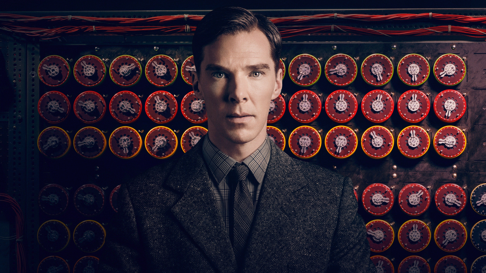

Alan Turing
If you love us,You are at the right place.
THE IMITATION GAME
Summary
- In 1939, newly created British intelligence agency MI6 recruits Cambridge mathematics alumnus Alan Turing (Benedict Cumberbatch) to crack Nazi codes, including Enigma -- which cryptanalysts had thought unbreakable.
- Turing's team, including Joan Clarke (Keira Knightley), analyze Enigma messages while he builds a machine to decipher them.
- Turing and team finally succeed and become heroes, but in 1952, the quiet genius encounters disgrace when authorities reveal he is gay and send him to prison.